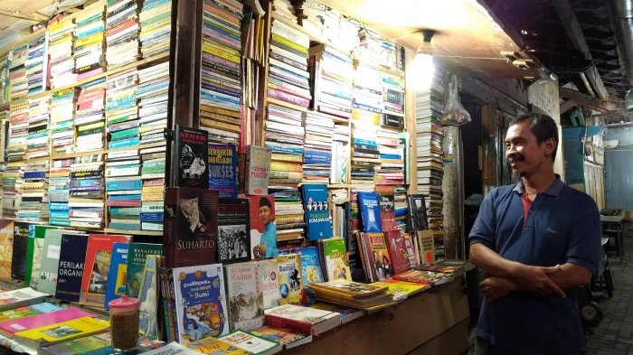

Work

Lapak Buku Bekas di Alun-Alun Tegal
Tutup karena Sepi Pembeli
Keberadaan lapak buku bekas yang ada di Pasar Alun-alun Tegal telah menjadi semacam trademark. Tapi nasibnya menyedihkan.

“Contains AI”: Should Music Come With a Label?
Should AI-generated music come with a “Contains AI” label, like food containing additives?

Surat Terbuka untuk Para Juru Parkir di Indonesia
Di mana-mana, juru parkir hampir selalu ada menunggu lapak idamannya. Beberapa orang, bahkan ada yang menyebutnya dengan sebutan hantu parkiran. Karena tiba-tiba muncul di tempat parkir padahal sebelumnya tidak ada.

Menilai Buku dari Sampulnya
Setelah sekian lama tidak membeli buku, akhirnya waktu membeli buku tiba juga. Gajian sudah tersisihkan, maka saatnya mencari buku yang saya ingin beli dan baca, serta murah.